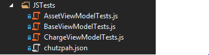

In ideal case any View Model in Knockout based application should be completely unit testable. The View Model ofcourse interacts with other code but in majority of cases this would be either some UI code or the server side code, probably over REST API. The UI interaction should be minimal. If possible, the binding capabilities of Knockout should be leveraged. The REST API is not available when unit testing and thus has to be mocked or hidden by an abstraction layer. I went for the first option and this blog describes how to mock the AJAX calls while unit testing Knockout View Models. At the end I also provide information about the ChutzPah test runner and the way that the tests can be run from within Visual Studio.
The typical view model that I am using looks like the following one.
function AssetViewModel(){
var self = this;
self.city = ko.observable();
self.country = ko.observable();
self.size = ko.observable();
self.load = function(){
$.ajax("/api/assets/" + self.city(), {
data: dto,
type: "GET", contentType: "application/json",
success: function (result) {
self.updateData(data);
}
});
}
self.save = function () {
var dto = self.toDto();
self.isBusy(true);
self.message("Saving...");
$.ajax("/api/assets/", {
data: dto,
type: "POST", contentType: "application/json",
success: function (result) {
self.edit(false);
self.isBusy(false);
self.message(result.message);
self.update(result.data);
}
});
};
self.update = function(updateData){
self.city(updateData.City);
self.country(updateData.Country);
}
self.toDto = function () {
var model = new Object();
model.City = self.city();
model.Country = self.country();
return JSON.stringify(model);
};
}
You might thing that the toDto method is useless if one uses the Knockout Mapping plug-in, however in many cases the view models get much more complex and they can't be directly mapped to any kind of data transfer objects or domain objects. Other than that, nothing should be suprising here. The save method sends the dto over the wire and than treats the response.
Nowadays one has a choice between multiple javascript testing frameworks, QUnit and Jasmine beeing probably the most common choices - I am staying with QUnit. Testing the updateData with QUnit might look like this.
var vm;
function initTest() {
var vm = new AssetViewModel();
}
$(function () {
QUnit.module("ViewModels/AssetViewModel", {
setup: initTest
});
QUnit.test("updateData sets correctly the city", function () {
var data = {
City: "Prague",
Country:"Czech Republic"
};
vm.updateData(data);
equal(vm.city(), "Prague");
});
}
QUnit module function takes 2 paramters - name and sort of configuration object. Configuration object can contain a setup and tearDown methods. Their usage and intend should be clear.
This test case is very simple for 2 reasons: it does not depend on any external resources and it executed synchronously.
QUnit has 3 assert methods which can be used in the tests:
Here is the test for the save method which calls the REST server interface.
function initTest() {
$.mockjax({
url: '/api/assets/Prague',
type: 'GET',
responseTime: 30,
responseText: JSON.stringify({
Name: "Prague",
Country: "Czech Republic",
Size: 20
})
});
}
$(function () {
QUnit.module("ViewModels/AssetViewModel", {
setup: initTest
});
QUnit.asyncTest("testing the load method", function () {
setTimeout(function () {
ok(true, "Passed and ready to resume!");
start();
vm.load();
QUnit.equal(vm.size(),20);
}, 100);
});
}
I am using MockJax library to mock the REST calls. The initTest method setups the desired behavior of the REST service call, the test is executed after 100ms of waiting time. In this case the call is a GET and we define only the response as JSON data. QUnit has a method for asynchronous tests called asyncTest.
Currently there is a small issue in MockJax regarding the way that incomming JSON values are handled. That might get fixed in future versions.
Returning a simple JSON data may be sufficient for some case, for others however we would maybe like to verify the integrity of the data sent to the server, just like when testing the save method
var storedAssets = [];
function initTest() {
$.mockjax({
url: '/api/assets',
type: 'POST',
responseTime: 30,
response: function (data) {
storedAssets.push(JSON.parse(data.data));
}
});
}
$(function () {
QUnit.module("ViewModels/AssetViewModel", {
setup: initTest
});
QUnit.asyncTest("save asset - check the update of the size", function () {
vm.size(10);
vm.save();
setTimeout(function () {
ok(true, "Passed and ready to resume!");
start();
equal(storedAssets.length, 1);
var storedAssets = storedCharges[0];
equal(storedAssets.Size, vm.size());
}, 100);
});
}
In this case the save method passes the JSON data to the server side. The server is mocked by MockJax which only adds the data to a dump array, which can be then used to verify the integrity of the data.
There are 3 reasons for which I am using Visual Studion even for JavaScript project:
To run the Unit Tests I am using ChutzPah test runner. ChutzPah internally uses the PhantomJS in memmory browser, and interprets the tests. While using this framework, one does not need the QUnit wrapper HTML page and the Unit Tests can be run as they are.
Note that ChutzPah already contains QUnit and you will obtain TimeOutException, if you try to add a reference to QUnit explicitely (http://chutzpah.codeplex.com/workitem/72).
Since your tests are just JavaScript files, without the HTML wrapper page, ChutzPah needs to know what libraries do your View Models reference and load them. This is handled using a configuration file chutzpah.json which has to be placed alongside the unit tests. The following is an example of configuration file that I am using for my tests.
{
"Framework": "qunit",
"References" : [
{ "Path": "../Scripts/jquery-2.1.0.js"},
{ "Path": "../Scripts/knockout-3.1.0.js"},
{ "Path": "../Scripts/jquery.mockjax.js"},
{ "Path": "../Scripts/tech", "Include": "*.js"},
{ "Path": "../ViewModels", "Include": "*.js"}
]
}

This is more a side note. Dates in JSON are serialized into ISO format. That is good, the problems is that if you try to deserialize an object which contains a date, the date comes out as a string. The reason of course is that since there is no type, the deserializer does not know that given property is a date - and keeps the value as a string. You can read more on dates serialization in JSON here. Any time that you are mocking backend which handles dates you have to be aware of this fact. Remember the mock of the back-end which inserts the object to a dummy array that I have used above:
function initTest() {
$.mockjax({
url: '/api/assets',
type: 'POST',
responseTime: 30,
response: function (data) {
storedAssets.push(JSON.parse(data.data));
}
});
}
JSON.parse call we handle the dates as strings. If the ViewModel has a date property, you will have to convert it into string before testing the equality.